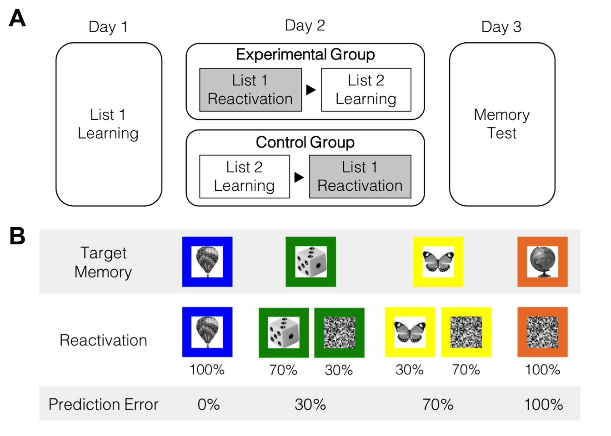
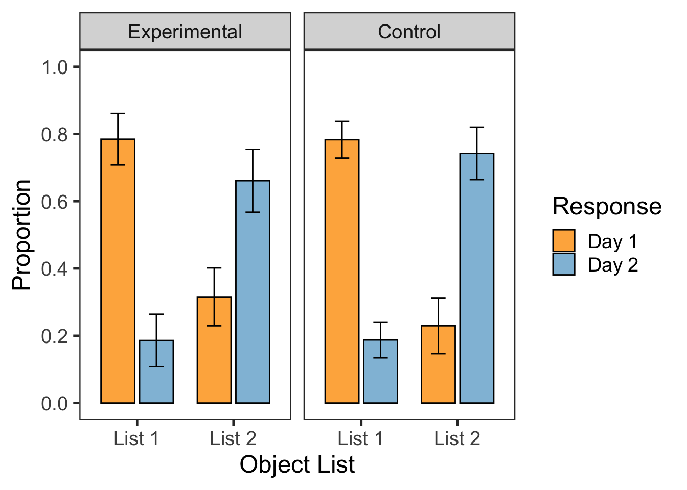
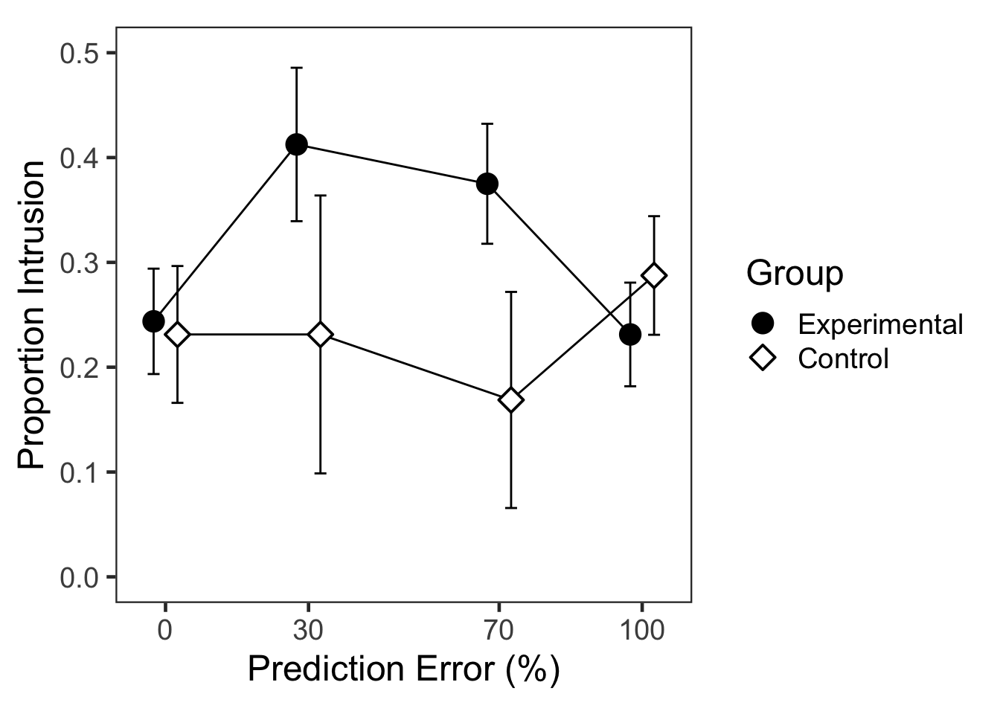

set.seed(12345)
if (!require("magick", quietly = TRUE)) install.packages("magick")
pacman::p_load(tidyverse, knitr,
afex, emmeans,
psych, ggplot2, papaja, cowplot)
pacman::p_load_gh("thomasp85/patchwork", "RLesur/klippy")
options(dplyr.summarise.inform=FALSE)
options(knitr.kable.NA = '')
set_sum_contrasts() # see Singmann & Kellen (2020)
klippy::klippy()f1 <- ggdraw() + draw_image("fig/F1A.png", scale = .9)
f2 <- ggdraw() + draw_image("fig/F1B.png", scale = .9)
plot_grid(f1, f2, labels = c('A', 'B'), nrow = 2, label_size = 20)
첫째 날과 둘째 날에 학습한 List 1과 List 2의 물체-색상 연합학습 강도를 확인할 수 있다.
# Data
g1 <- read.csv("data/MemUdt_PE_d1t2_p.csv", header = T)
g2 <- read.csv("data/MemUdt_PE_d2t5_p.csv", header = T)
g1$List <- 'list1';
g2$List <- 'list2';
p1 <- rbind(g1, g2)
p1$SN <- factor(p1$SN)
p1$Group <- factor(p1$Group, levels = c(1,2), labels=c("Experimental", "Control"))
p1$List <- factor(p1$List)
headTail(p1)
## SN Group Trial Block bTrial cCue IMidx IMname CueName
## 1 1 Experimental 1 1 1 4 223 man309.jpg cue_4.jpg
## 2 1 Experimental 2 1 2 2 74 man106.jpg cue_2.jpg
## 3 1 Experimental 3 1 3 2 151 man201.jpg cue_2.jpg
## 4 1 Experimental 4 1 4 3 200 man276.jpg cue_3.jpg
## ... <NA> <NA> ... ... ... ... ... <NA> <NA>
## 10237 16 Control 310 4 70 4 9 man016.jpg cue_2.jpg
## 10238 16 Control 312 4 72 4 80 man112.jpg cue_2.jpg
## 10239 16 Control 314 4 74 4 155 man206.jpg cue_2.jpg
## 10240 16 Control 315 4 75 4 240 man336.jpg cue_2.jpg
## Resp RT Corr List
## 1 2 1.29 1 list1
## 2 4 1.83 0 list1
## 3 1 0.84 1 list1
## 4 2 1.46 0 list1
## ... ... ... ... <NA>
## 10237 4 0.71 1 list2
## 10238 4 1.77 1 list2
## 10239 4 0.91 1 list2
## 10240 4 0.84 1 list2
table(p1$Group, p1$SN)
##
## 1 2 3 4 5 6 7 8 9 10 11 12 13 14 15 16
## Experimental 640 640 640 640 640 640 0 0 640 640 0 0 0 0 0 0
## Control 0 0 0 0 0 0 640 640 0 0 640 640 640 640 640 640
# descriptive
p1 %>% group_by(Group, SN, List, Block) %>%
summarise(Accuracy = mean(Corr)*100) %>%
ungroup() %>%
group_by(Group, List, Block) %>%
summarise(Accuracy = mean(Accuracy)) %>%
ungroup() %>%
pivot_wider(names_from = 'Block', values_from = 'Accuracy') %>%
kable(digits = 4, caption = "Descriptive statistics: Group x List x Black")| Group | List | 1 | 2 | 3 | 4 |
|---|---|---|---|---|---|
| Experimental | list1 | 46.8750 | 83.1250 | 94.6875 | 98.7500 |
| Experimental | list2 | 62.9688 | 91.7188 | 97.6562 | 99.5312 |
| Control | list1 | 51.8750 | 83.2812 | 93.4375 | 96.8750 |
| Control | list2 | 64.0625 | 88.2812 | 94.3750 | 98.7500 |
p1 %>% group_by(Group, SN, List, Block) %>%
summarise(Accuracy = mean(Corr)*100) %>%
ungroup() %>%
group_by(List, Block) %>%
summarise(Accuracy = mean(Accuracy)) %>%
ungroup() %>%
pivot_wider(names_from = 'Block', values_from = 'Accuracy') %>%
kable(digits = 4, caption = "Descriptive statistics: List x Black")| List | 1 | 2 | 3 | 4 |
|---|---|---|---|---|
| list1 | 49.3750 | 83.2031 | 94.0625 | 97.8125 |
| list2 | 63.5156 | 90.0000 | 96.0156 | 99.1406 |
# 3way ANOVA
p1.aov <- p1 %>% group_by(Group, SN, List, Block) %>%
summarise(Accuracy = mean(Corr)*100) %>%
ungroup() %>%
aov_ez(id = 'SN', dv = 'Accuracy',
between = 'Group', within = c('List', 'Block'),
anova_table = list(es = 'pes'))
p1.aov## Anova Table (Type 3 tests)
##
## Response: Accuracy
## Effect df MSE F pes p.value
## 1 Group 1, 14 245.08 0.04 .003 .846
## 2 List 1, 14 40.39 29.04 *** .675 <.001
## 3 Group:List 1, 14 40.39 0.88 .059 .364
## 4 Block 1.25, 17.44 169.49 166.33 *** .922 <.001
## 5 Group:Block 1.25, 17.44 169.49 0.67 .046 .456
## 6 List:Block 1.81, 25.33 33.27 13.97 *** .499 <.001
## 7 Group:List:Block 1.81, 25.33 33.27 0.52 .036 .582
## ---
## Signif. codes: 0 '***' 0.001 '**' 0.01 '*' 0.05 '+' 0.1 ' ' 1
##
## Sphericity correction method: GGList 1보다 List 2의 정확도가 항상 높았지만, 그 차이는 후반부로 갈수록 감소한다.
p1.emm <- p1.aov %>%
emmeans(pairwise ~ List | Block, type = "response") %>%
summary(by = NULL, adjust = "bonferroni")
p1.emm[[2]]## contrast Block estimate SE df t.ratio p.value
## list1 - list2 X1 -14.14 2.840 14 -4.979 0.0008
## list1 - list2 X2 -6.80 1.939 14 -3.506 0.0140
## list1 - list2 X3 -1.95 0.763 14 -2.561 0.0905
## list1 - list2 X4 -1.33 0.408 14 -3.254 0.0230
##
## Results are averaged over the levels of: Group
## P value adjustment: bonferroni method for 4 testsBonferroni 보정 후, List 1과 2의 차이는 여전히 유의미하다.
# Data
p2 <- read.csv("data/MemUdt_PE_d3t6_p.csv", header = T)
p2$SN <- factor(p2$SN)
p2$Group <- factor(p2$Group, levels=c(1,2), labels=c("Experimental","Control"))
p2$List <- factor(p2$List, levels=c(1,2,3), labels=c("list1","list2","list3"))
p2$Cue <- factor(p2$Cue, levels=c(1,2,3,4,0), labels=c("cc1","cc2","cc3","cc4","lure"))
# p2$PE <- factor(p2$PE, levels=c(1,2,3,4,0), labels=c("pe0","pe30","pe70","pe100","lure"))
p2$CueName = factor(p2$CueName, labels=c("c0","c1","c2","c3","c4"))
p2$Resp <- factor(p2$Resp, levels=c(1,2,3), labels=c("list1", "list2", "list3"))
p2$PE[p2$PE==0] <- NA
p2$PE[p2$PE==1] <- 0
p2$PE[p2$PE==2] <- 30
p2$PE[p2$PE==3] <- 70
p2$PE[p2$PE==4] <- 100
str(p2)
## 'data.frame': 3840 obs. of 19 variables:
## $ SN : Factor w/ 16 levels "1","2","3","4",..: 1 1 1 1 1 1 1 1 1 1 ...
## $ Group : Factor w/ 2 levels "Experimental",..: 1 1 1 1 1 1 1 1 1 1 ...
## $ Trial : int 1 2 3 4 5 6 7 8 9 10 ...
## $ List : Factor w/ 3 levels "list1","list2",..: 2 3 2 3 1 2 1 2 3 3 ...
## $ Cue : Factor w/ 5 levels "cc1","cc2","cc3",..: 4 5 1 5 2 3 3 2 5 5 ...
## $ PE : num 100 NA 0 NA 70 30 30 70 NA NA ...
## $ IMidx : int 226 195 206 144 81 4 125 193 14 1 ...
## $ IMname : chr " man312.jpg" " man267.jpg" " man283.jpg" " man190.jpg" ...
## $ CueName: Factor w/ 5 levels "c0","c1","c2",..: 5 1 2 1 3 4 4 3 1 1 ...
## $ Resp : Factor w/ 3 levels "list1","list2",..: 2 3 2 3 1 2 2 1 3 3 ...
## $ RT : num 12.93 2.34 11.8 1.99 8.86 ...
## $ Corr : int 1 1 1 1 1 1 2 3 1 1 ...
## $ Conf : int 2 4 2 4 3 3 3 3 4 4 ...
## $ cRT : num 1.78 1.11 2.49 1.14 2.01 ...
## $ aResp : int 2 7 3 7 1 4 4 1 7 7 ...
## $ aRT : num 1.38 0 2.02 0 1.44 ...
## $ aCorr : int 1 7 1 7 1 1 1 1 7 7 ...
## $ aConf : int 4 7 3 7 4 4 4 3 7 7 ...
## $ aCRT : num 2.69 0 2.54 0 1.89 ...마지막 날(Day 3)에 실시한 출처기억 검사 결과를 정리하였다.
# recognition: except List 3
p2old <- p2 %>%
filter(List == "list1" | List == "list2") %>%
select(SN, Group, List, Cue, PE, Resp, Corr, Conf) %>%
droplevels()
unique(p2old$List)
## [1] list2 list1
## Levels: list1 list2
unique(p2old$Resp)
## [1] list2 list1 list3
## Levels: list1 list2 list3
unique(p2old$Corr)
## [1] 1 2 3 0
p2old$Miss <- as.numeric(p2old$Corr==0) # recognition: miss rate
p2old$Correct <- as.numeric(p2old$Corr==1) # correct source memory
p2old$L1toL2 <- as.numeric(p2old$Corr==2) # source confusion
p2old$L2toL1 <- as.numeric(p2old$Corr==3) # source confusion + intrusion
glimpse(p2old)
## Rows: 2,560
## Columns: 12
## $ SN <fct> 1, 1, 1, 1, 1, 1, 1, 1, 1, 1, 1, 1, 1, 1, 1, 1, 1, 1, 1, 1, 1,…
## $ Group <fct> Experimental, Experimental, Experimental, Experimental, Experi…
## $ List <fct> list2, list2, list1, list2, list1, list2, list2, list1, list1,…
## $ Cue <fct> cc4, cc1, cc2, cc3, cc3, cc2, cc3, cc4, cc3, cc2, cc3, cc3, cc…
## $ PE <dbl> 100, 0, 70, 30, 30, 70, 30, 100, 30, 70, 30, 30, 100, 30, 70, …
## $ Resp <fct> list2, list2, list1, list2, list2, list1, list2, list1, list2,…
## $ Corr <int> 1, 1, 1, 1, 2, 3, 1, 1, 2, 3, 0, 2, 1, 1, 1, 1, 2, 1, 2, 1, 1,…
## $ Conf <int> 2, 2, 3, 3, 3, 3, 2, 2, 4, 4, 1, 3, 2, 4, 3, 3, 4, 3, 3, 2, 4,…
## $ Miss <dbl> 0, 0, 0, 0, 0, 0, 0, 0, 0, 0, 1, 0, 0, 0, 0, 0, 0, 0, 0, 0, 0,…
## $ Correct <dbl> 1, 1, 1, 1, 0, 0, 1, 1, 0, 0, 0, 0, 1, 1, 1, 1, 0, 1, 0, 1, 1,…
## $ L1toL2 <dbl> 0, 0, 0, 0, 1, 0, 0, 0, 1, 0, 0, 1, 0, 0, 0, 0, 1, 0, 1, 0, 0,…
## $ L2toL1 <dbl> 0, 0, 0, 0, 0, 1, 0, 0, 0, 1, 0, 0, 0, 0, 0, 0, 0, 0, 0, 0, 0,…
p2oldslong <- p2old %>%
group_by(Group, SN, List) %>%
summarise(Correct = mean(Correct)*100,
Miss = mean(Miss)*100,
L1toL2 = mean(L1toL2)*100,
L2toL1 = mean(L2toL1)*100) %>%
ungroup() %>%
mutate(AttrError = L1toL2 + L2toL1) %>%
select(Group, SN, List, Correct, Miss, AttrError)
p2oldslong %>% group_by(Group, List) %>%
summarise(Correct = mean(Correct),
Miss = mean(Miss),
AttrError = mean(AttrError)) %>%
ungroup() %>%
kable(digits = 4, caption = "Descriptive statistics: Group x List")| Group | List | Correct | Miss | AttrError |
|---|---|---|---|---|
| Experimental | list1 | 78.4375 | 2.9688 | 18.5938 |
| Experimental | list2 | 66.0938 | 2.3438 | 31.5625 |
| Control | list1 | 78.2812 | 2.9688 | 18.7500 |
| Control | list2 | 74.2188 | 2.8125 | 22.9688 |
p2new <- p2 %>%
filter(List == "list3") %>%
select(SN, Group, Resp, Corr, Conf) %>%
droplevels()
head(p2new)
## SN Group Resp Corr Conf
## 1 1 Experimental list3 1 4
## 2 1 Experimental list3 1 4
## 3 1 Experimental list3 1 4
## 4 1 Experimental list3 1 4
## 5 1 Experimental list3 1 3
## 6 1 Experimental list3 1 4
unique(p2new$Resp)
## [1] list3 list2 list1
## Levels: list1 list2 list3
unique(p2new$Corr)
## [1] 1 0
p2new %>% group_by(Group, SN) %>%
summarise(FA = 100 - mean(Corr)*100) %>%
ungroup() %>%
group_by(Group) %>%
summarise(FA = mean(FA)) %>%
ungroup() %>%
kable(digits = 4, caption = "Descriptive statistics: Group")| Group | FA |
|---|---|
| Experimental | 3.1250 |
| Control | 1.7188 |
p2oldslong %>% aov_ez(id = 'SN', dv = 'Miss',
between = 'Group', within = 'List',
anova_table = list(es = 'pes'))## Anova Table (Type 3 tests)
##
## Response: Miss
## Effect df MSE F pes p.value
## 1 Group 1, 14 8.45 0.05 .004 .823
## 2 List 1, 14 2.50 0.49 .034 .496
## 3 Group:List 1, 14 2.50 0.18 .012 .682
## ---
## Signif. codes: 0 '***' 0.001 '**' 0.01 '*' 0.05 '+' 0.1 ' ' 1List 1과 List 2의 항목을 “본 적 없다”고 답하는 비율은 매우 낮았고, 조건간 차이도 유의미하지 않았다.
p2new %>% group_by(Group, SN) %>%
summarise(FA = 100 - mean(Corr)*100) %>%
ungroup() %>%
aov_ez(id = 'SN', dv = 'FA', between = 'Group',
anova_table = list(es = 'pes'))## Anova Table (Type 3 tests)
##
## Response: FA
## Effect df MSE F pes p.value
## 1 Group 1, 14 17.62 0.45 .031 .514
## ---
## Signif. codes: 0 '***' 0.001 '**' 0.01 '*' 0.05 '+' 0.1 ' ' 1List 3의 항목을 “봤다”고 답한 비율도 낮았다. 집단 차이는 유의미하지 않았다.
p2oldslong %>% aov_ez(id = 'SN', dv = 'Correct',
between = 'Group', within = 'List',
anova_table = list(es = 'pes'))## Anova Table (Type 3 tests)
##
## Response: Correct
## Effect df MSE F pes p.value
## 1 Group 1, 14 102.56 1.24 .081 .285
## 2 List 1, 14 40.31 13.35 ** .488 .003
## 3 Group:List 1, 14 40.31 3.40 + .196 .086
## ---
## Signif. codes: 0 '***' 0.001 '**' 0.01 '*' 0.05 '+' 0.1 ' ' 1List 1의 정반응 비율이 List 2보다 높았다.
p2AttrErr.aov <- p2oldslong %>%
aov_ez(id = 'SN', dv = 'AttrError',
between = 'Group', within = 'List',
anova_table = list(es = 'pes'))
p2AttrErr.aov ## Anova Table (Type 3 tests)
##
## Response: AttrError
## Effect df MSE F pes p.value
## 1 Group 1, 14 75.04 1.90 .119 .190
## 2 List 1, 14 37.71 15.67 ** .528 .001
## 3 Group:List 1, 14 37.71 4.06 + .225 .064
## ---
## Signif. codes: 0 '***' 0.001 '**' 0.01 '*' 0.05 '+' 0.1 ' ' 1# custom contrast
p2AttrErr.emm <- p2AttrErr.aov %>% emmeans(~ List*Group)
con <- emmeans:::trt.vs.ctrl.emmc(1:4)
ExpL2L1 <- c(-1, 1,0,0)
ConL2L1 <- c(0,0,-1, 1)
L2ExpCon <- c(0,1,0,-1)
con <- data.frame(ExpL2L1, ConL2L1, L2ExpCon)
contrast(p2AttrErr.emm, con, adjust = "bonferroni")## contrast estimate SE df t.ratio p.value
## ExpL2L1 12.97 3.07 14 4.224 0.0026
## ConL2L1 4.22 3.07 14 1.374 0.5731
## L2ExpCon 8.59 4.08 14 2.105 0.1615
##
## P value adjustment: bonferroni method for 3 testsANOVA에서 List 2를 List 1으로 오기억하는 경우가 반대보다 높았으나, 집단 차이는 유의미하지 않았다. 그러나 사후비교에서 실험집단의 경우에만 List 2 오귀인이 List 1 오귀인보다 높았다(비대칭적 오귀인 분포).
p2PEslong <- p2old %>%
filter(List == 'list2') %>%
group_by(Group, SN, PE) %>%
droplevels() %>%
summarise(L2toL1 = mean(L2toL1)) %>%
ungroup()
str(p2PEslong)
## tibble [64 × 4] (S3: tbl_df/tbl/data.frame)
## $ Group : Factor w/ 2 levels "Experimental",..: 1 1 1 1 1 1 1 1 1 1 ...
## $ SN : Factor w/ 16 levels "1","2","3","4",..: 1 1 1 1 2 2 2 2 3 3 ...
## $ PE : num [1:64] 0 30 70 100 0 30 70 100 0 30 ...
## $ L2toL1: num [1:64] 0.35 0.65 0.6 0.45 0.15 0.35 0.2 0.15 0.3 0.45 ...p2PEslong %>%
group_by(Group, PE) %>%
summarise(L2toL1 = mean(L2toL1)) %>%
ungroup() %>%
pivot_wider(names_from = 'PE', values_from = 'L2toL1') %>%
kable(digits = 4, caption = "Descriptive statistics: Group x PE")| Group | 0 | 30 | 70 | 100 |
|---|---|---|---|---|
| Experimental | 0.2438 | 0.4125 | 0.3750 | 0.2313 |
| Control | 0.2313 | 0.2313 | 0.1688 | 0.2875 |
p2PE.aov <- p2PEslong %>%
aov_ez(id = 'SN', dv = 'L2toL1',
between = 'Group', within = 'PE',
anova_table = list(es = 'pes'))
p2PE.aov## Anova Table (Type 3 tests)
##
## Response: L2toL1
## Effect df MSE F pes p.value
## 1 Group 1, 14 0.03 4.43 + .240 .054
## 2 PE 1.77, 24.77 0.01 2.32 .142 .124
## 3 Group:PE 1.77, 24.77 0.01 7.44 ** .347 .004
## ---
## Signif. codes: 0 '***' 0.001 '**' 0.01 '*' 0.05 '+' 0.1 ' ' 1
##
## Sphericity correction method: GG집단과 예측오류 수준의 상호작용이 유의미하였다.
# custom contrast
p2PE.emm <- p2PE.aov %>% emmeans(~ Group*PE)
con <- emmeans:::trt.vs.ctrl.emmc(1:8)
Exp0to30 <- c(-1,0,1,0,0,0,0,0)
Exp0to70 <- c(-1,0,0,0,1,0,0,0)
Exp0to100 <- c(-1,0,0,0,0,0,1,0)
Exp100to30 <- c(0,0,1,0,0,0,-1,0)
Exp100to70 <- c(0,0,0,0,1,0,-1,0)
Con0to30 <- c(0,-1,0,1,0,0,0,0)
Con0to70 <- c(0,-1,0,0,0,1,0,0)
Con0to100 <- c(0,-1,0,0,0,0,0,1)
Con100to30 <- c(0,0,0,1,0,0,0,-1)
Con100to70 <- c(0,0,0,0,0,1,0,-1)
con <- data.frame(Exp0to30, Exp0to70, Exp0to100, Exp100to30, Exp100to70,
Con0to30, Con0to70, Con0to100, Con100to30, Con100to70)
contrast(p2PE.emm, con, adjust = "Bonferroni")## contrast estimate SE df t.ratio p.value
## Exp0to30 0.1688 0.0526 14 3.209 0.0630
## Exp0to70 0.1313 0.0332 14 3.954 0.0144
## Exp0to100 -0.0125 0.0355 14 -0.352 1.0000
## Exp100to30 0.1812 0.0465 14 3.900 0.0160
## Exp100to70 0.1437 0.0374 14 3.841 0.0180
## Con0to30 0.0000 0.0526 14 0.000 1.0000
## Con0to70 -0.0625 0.0332 14 -1.883 0.8070
## Con0to100 0.0563 0.0355 14 1.586 1.0000
## Con100to30 -0.0563 0.0465 14 -1.210 1.0000
## Con100to70 -0.1187 0.0374 14 -3.173 0.0678
##
## P value adjustment: bonferroni method for 10 tests실험집단에서만 PE100의 침범반응이 PE30과 PE70보다 적었다.
# https://cran.r-project.org/web/packages/emmeans/vignettes/interactions.html
emm.t <- p2PE.aov %>% emmeans(pairwise ~ PE | Group)
emm.t[[1]] %>% contrast("poly") %>%
summary(by = NULL, adjust = "Bonferroni")## contrast Group estimate SE df t.ratio p.value
## linear Experimental -0.075 0.1146 14 -0.654 1.0000
## quadratic Experimental -0.312 0.0405 14 -7.722 <.0001
## cubic Experimental 0.100 0.2115 14 0.473 1.0000
## linear Control 0.106 0.1146 14 0.927 1.0000
## quadratic Control 0.119 0.0405 14 2.934 0.0653
## cubic Control 0.244 0.2115 14 1.152 1.0000
##
## P value adjustment: bonferroni method for 6 testsemm.t[[1]] %>% contrast(interaction = c("poly", "consec"),
by = NULL, adjust = "Bonferroni")## PE_poly Group_consec estimate SE df t.ratio p.value
## linear Control - Experimental 0.181 0.1621 14 1.118 0.8473
## quadratic Control - Experimental 0.431 0.0572 14 7.535 <.0001
## cubic Control - Experimental 0.144 0.2992 14 0.480 1.0000
##
## P value adjustment: bonferroni method for 3 tests이차함수 추세(quadratic trend)에서 PE와 집단의 상호작용이 유의미하였다(가정 중요한 결과).
p2old %>% filter(Corr == 2 | Corr == 3) %>%
droplevels() %>%
group_by(Group, SN, List) %>%
summarise(Confid = mean(Conf)) %>%
ungroup() %>%
group_by(Group, List) %>%
summarise(Confid = mean(Confid)) %>%
ungroup() %>%
pivot_wider(names_from = 'List', values_from = 'Confid') %>%
kable(digits = 4, caption = "Descriptive statistics: Group x List")| Group | list1 | list2 |
|---|---|---|
| Experimental | 3.0616 | 3.2275 |
| Control | 2.5919 | 3.0929 |
p2old %>% filter(Corr == 2 | Corr == 3) %>%
droplevels() %>%
group_by(Group, SN, List) %>%
summarise(Confid = mean(Conf)) %>%
ungroup() %>%
aov_ez(id = 'SN', dv = 'Confid',
between = 'Group', within = 'List',
anova_table = list(es = 'pes'))## Anova Table (Type 3 tests)
##
## Response: Confid
## Effect df MSE F pes p.value
## 1 Group 1, 14 0.52 1.41 .092 .255
## 2 List 1, 14 0.08 11.63 ** .454 .004
## 3 Group:List 1, 14 0.08 2.93 .173 .109
## ---
## Signif. codes: 0 '***' 0.001 '**' 0.01 '*' 0.05 '+' 0.1 ' ' 1List 1보다 List 2에 대한 확신도가 더 높았다.
# List 2 misattr X PE: Confidence
p2old %>% filter(List == 'list2') %>%
droplevels() %>%
group_by(Group, SN, PE) %>%
summarise(Conf = mean(Conf)) %>%
ungroup() %>%
group_by(Group, PE) %>%
summarise(Conf = mean(Conf)) %>%
ungroup() %>%
pivot_wider(names_from = 'PE', values_from = 'Conf') %>%
kable(digits = 4, caption = "Descriptive statistics: Group x PE")| Group | 0 | 30 | 70 | 100 |
|---|---|---|---|---|
| Experimental | 3.2938 | 3.2625 | 3.3688 | 3.4250 |
| Control | 3.1312 | 3.1188 | 3.2500 | 3.1125 |
p2old %>% filter(List == 'list2') %>%
droplevels() %>%
group_by(Group, SN, PE) %>%
summarise(Conf = mean(Conf)) %>%
ungroup() %>%
aov_ez(id = 'SN', dv = 'Conf',
between = 'Group', within = 'PE',
anova_table = list(es = 'pes'))## Anova Table (Type 3 tests)
##
## Response: Conf
## Effect df MSE F pes p.value
## 1 Group 1, 14 0.81 0.67 .046 .427
## 2 PE 2.72, 38.14 0.04 1.41 .091 .257
## 3 Group:PE 2.72, 38.14 0.04 0.92 .062 .432
## ---
## Signif. codes: 0 '***' 0.001 '**' 0.01 '*' 0.05 '+' 0.1 ' ' 1
##
## Sphericity correction method: GGp2 %>% filter(List != "list3", Resp != "list3") %>%
group_by(Group, SN, List) %>%
summarise(Accuracy = mean(aCorr)*100) %>%
ungroup() %>%
group_by(Group, List) %>%
summarise(Accuracy = mean(Accuracy)) %>%
ungroup() %>%
pivot_wider(names_from = 'List', values_from = 'Accuracy') %>%
kable(digits = 4, caption = "Descriptive statistics: Group x List")| Group | list1 | list2 |
|---|---|---|
| Experimental | 90.3437 | 94.2232 |
| Control | 83.5967 | 90.5806 |
p2 %>% filter(List != "list3", Resp != "list3") %>%
group_by(Group, SN, List) %>%
summarise(Accuracy = mean(aCorr)*100) %>%
ungroup() %>%
aov_ez(id = 'SN', dv = 'Accuracy',
between = 'Group', within = 'List',
anova_table = list(es = 'pes'))## Anova Table (Type 3 tests)
##
## Response: Accuracy
## Effect df MSE F pes p.value
## 1 Group 1, 14 90.63 2.38 .145 .145
## 2 List 1, 14 17.97 13.13 ** .484 .003
## 3 Group:List 1, 14 17.97 1.07 .071 .318
## ---
## Signif. codes: 0 '***' 0.001 '**' 0.01 '*' 0.05 '+' 0.1 ' ' 1p2 %>% filter(List != "list3", Resp != "list3") %>%
group_by(Group, SN, List) %>%
summarise(Confident = mean(aConf)) %>%
ungroup() %>%
group_by(Group, List) %>%
summarise(Confident = mean(Confident)) %>%
ungroup() %>%
pivot_wider(names_from = 'List', values_from = 'Confident') %>%
kable(digits = 4, caption = "Descriptive statistics: Group x List")| Group | list1 | list2 |
|---|---|---|
| Experimental | 3.7258 | 3.7645 |
| Control | 3.4730 | 3.5647 |
p2 %>% filter(List != "list3", Resp != "list3") %>%
group_by(Group, SN, List) %>%
summarise(Confident = mean(aConf)) %>%
ungroup() %>%
aov_ez(id = 'SN', dv = 'Confident',
between = 'Group', within = 'List',
anova_table = list(es = 'pes'))## Anova Table (Type 3 tests)
##
## Response: Confident
## Effect df MSE F pes p.value
## 1 Group 1, 14 0.18 2.29 .141 .152
## 2 List 1, 14 0.01 5.07 * .266 .041
## 3 Group:List 1, 14 0.01 0.84 .056 .376
## ---
## Signif. codes: 0 '***' 0.001 '**' 0.01 '*' 0.05 '+' 0.1 ' ' 1p2cnt <- p2old %>%
group_by(Group, SN, List, Resp) %>%
summarise(n = n()) %>%
mutate(prop = n/sum(n)) %>%
ungroup() %>%
filter(Resp != 'list3') %>%
droplevels()
# print(p2cnt, n=20)
tmp0 <- p2cnt %>%
group_by(Group, List, Resp) %>%
summarise(MN = mean(prop),
SD = sd(prop)) %>%
ungroup()
tmp1 <- p2cnt %>%
filter(Group == 'Experimental') %>%
droplevels() %>%
papaja::wsci(id = 'SN',
factor = c('List', 'Resp'),
dv = 'prop') %>%
mutate(Group = "Experimental") %>%
rename("wsci" = "prop")
tmp2 <- p2cnt %>%
filter(Group == 'Control') %>%
droplevels() %>%
papaja::wsci(id = 'SN',
factor = c('List', 'Resp'),
dv = 'prop') %>%
mutate(Group = "Control") %>%
rename("wsci" = "prop")
tmp3 <- merge(tmp1, tmp2, all = TRUE)
p2cnt.g <- merge(tmp0, tmp3, by = c("Group", "List", "Resp"), all = TRUE)
F2A <- ggplot(data=p2cnt.g, aes(x=List, y=MN, fill=Resp)) +
geom_bar(stat='identity', width=0.7, color="black",
position=position_dodge(.8)) +
geom_errorbar(aes(x=List, ymin=MN-wsci, ymax=MN+wsci, group=Resp),
position = position_dodge(0.8), width=0.3,
show.legend = FALSE) +
facet_grid(.~Group) +
scale_x_discrete(labels=c("List 1","List 2")) +
scale_y_continuous(breaks=c(0, .2, .4, .6, .8, 1)) +
scale_fill_manual(values = c("#feb24c", "#91bfdb"),
labels = c("Day 1", "Day 2")) +
labs(x = "Object List", y = "Proportion", fill='Response') +
coord_cartesian(ylim = c(0, 1), clip = "on") +
theme_bw(base_size = 18) +
theme(panel.grid.major = element_blank(),
panel.grid.minor = element_blank())
F2A
tmp0 <- p2PEslong %>%
group_by(Group, PE) %>%
summarise(MN = mean(L2toL1)) %>%
ungroup()
tmp1 <- p2PEslong %>%
filter(Group == 'Experimental') %>%
droplevels() %>%
papaja::wsci(id = 'SN',
factor = 'PE',
dv = 'L2toL1') %>%
mutate(Group = "Experimental") %>%
rename("wsci" = "L2toL1")
tmp2 <- p2PEslong %>%
filter(Group == 'Control') %>%
droplevels() %>%
papaja::wsci(id = 'SN',
factor = 'PE',
dv = 'L2toL1') %>%
mutate(Group = "Control") %>%
rename("wsci" = "L2toL1")
tmp3 <- merge(tmp1, tmp2, all = TRUE)
p2PEg <- merge(tmp0, tmp3, by = c("Group", "PE"), all = TRUE)
F2B <- ggplot(data=p2PEg, aes(x=PE, y=MN, group=Group,
ymin=MN-wsci, ymax=MN+wsci)) +
geom_line(position = position_dodge(width=10)) +
geom_errorbar(position = position_dodge(10), width=5,
show.legend = FALSE) +
geom_point(aes(shape=Group, fill=Group),
size=4, color='black', stroke=1,
position=position_dodge(width=10)) +
scale_x_continuous(breaks=c(0, 30, 70, 100)) +
scale_y_continuous(breaks=c(0, .1, .2, .3, .4, .5)) +
scale_shape_manual(values = c(21, 23)) +
scale_fill_manual(values = c("black", "white")) +
labs(x = "Prediction Error (%)", y = "Proportion Intrusion", fill='Group') +
coord_cartesian(ylim = c(0, 0.5), clip = "on") +
theme_bw(base_size = 18) +
theme(panel.grid.major = element_blank(),
panel.grid.minor = element_blank(),
aspect.ratio = 1)
F2B
sessionInfo()
## R version 4.1.2 (2021-11-01)
## Platform: x86_64-apple-darwin17.0 (64-bit)
## Running under: macOS Monterey 12.2.1
##
## Matrix products: default
## LAPACK: /Library/Frameworks/R.framework/Versions/4.1/Resources/lib/libRlapack.dylib
##
## locale:
## [1] en_US.UTF-8/en_US.UTF-8/en_US.UTF-8/C/en_US.UTF-8/en_US.UTF-8
##
## attached base packages:
## [1] stats graphics grDevices utils datasets methods base
##
## other attached packages:
## [1] klippy_0.0.0.9500 patchwork_1.1.1 cowplot_1.1.1 papaja_0.1.0.9997
## [5] psych_2.1.9 emmeans_1.7.2 afex_1.0-1 lme4_1.1-28
## [9] Matrix_1.4-0 knitr_1.37 forcats_0.5.1 stringr_1.4.0
## [13] dplyr_1.0.8 purrr_0.3.4 readr_2.1.2 tidyr_1.2.0
## [17] tibble_3.1.6 ggplot2_3.3.5 tidyverse_1.3.1 magick_2.7.3
## [21] icons_0.2.0
##
## loaded via a namespace (and not attached):
## [1] TH.data_1.1-0 minqa_1.2.4 colorspace_2.0-3
## [4] ellipsis_0.3.2 rsconnect_0.8.25 rprojroot_2.0.2
## [7] estimability_1.3 fs_1.5.2 rstudioapi_0.13
## [10] farver_2.1.0 remotes_2.4.2 fansi_1.0.2
## [13] mvtnorm_1.1-3 lubridate_1.8.0 xml2_1.3.3
## [16] codetools_0.2-18 splines_4.1.2 mnormt_2.0.2
## [19] cachem_1.0.6 pkgload_1.2.4 jsonlite_1.7.3
## [22] nloptr_2.0.0 broom_0.7.12 dbplyr_2.1.1
## [25] compiler_4.1.2 httr_1.4.2 backports_1.4.1
## [28] assertthat_0.2.1 fastmap_1.1.0 cli_3.2.0
## [31] htmltools_0.5.2 prettyunits_1.1.1 tools_4.1.2
## [34] lmerTest_3.1-3 coda_0.19-4 gtable_0.3.0
## [37] glue_1.6.1 reshape2_1.4.4 rappdirs_0.3.3
## [40] Rcpp_1.0.8 carData_3.0-5 cellranger_1.1.0
## [43] jquerylib_0.1.4 vctrs_0.3.8 nlme_3.1-155
## [46] xfun_0.29 ps_1.6.0 brio_1.1.3
## [49] testthat_3.1.2 rvest_1.0.2 lifecycle_1.0.1
## [52] pacman_0.5.1 devtools_2.4.3 MASS_7.3-55
## [55] zoo_1.8-9 scales_1.1.1 hms_1.1.1
## [58] parallel_4.1.2 sandwich_3.0-1 yaml_2.3.5
## [61] curl_4.3.2 memoise_2.0.1 sass_0.4.0
## [64] stringi_1.7.6 highr_0.9 desc_1.4.0
## [67] boot_1.3-28 pkgbuild_1.3.1 rlang_1.0.1
## [70] pkgconfig_2.0.3 evaluate_0.15 lattice_0.20-45
## [73] labeling_0.4.2 processx_3.5.2 tidyselect_1.1.2
## [76] plyr_1.8.6 magrittr_2.0.2 R6_2.5.1
## [79] generics_0.1.2 multcomp_1.4-18 DBI_1.1.2
## [82] pillar_1.7.0 haven_2.4.3 withr_2.4.3
## [85] survival_3.2-13 abind_1.4-5 modelr_0.1.8
## [88] crayon_1.5.0 car_3.0-12 utf8_1.2.2
## [91] tmvnsim_1.0-2 tzdb_0.2.0 rmarkdown_2.11
## [94] usethis_2.1.5 grid_4.1.2 readxl_1.3.1
## [97] callr_3.7.0 reprex_2.0.1 digest_0.6.29
## [100] xtable_1.8-4 numDeriv_2016.8-1.1 munsell_0.5.0
## [103] bslib_0.3.1 sessioninfo_1.2.2Copyright © 2022 CogNIPS. All rights reserved.